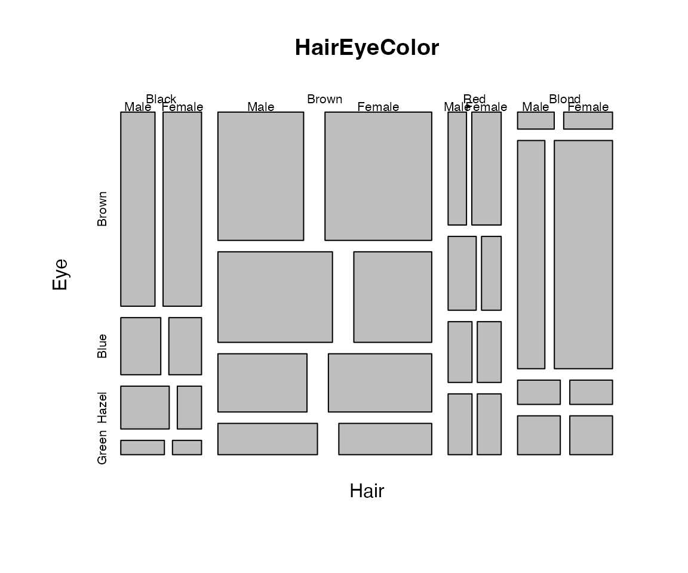
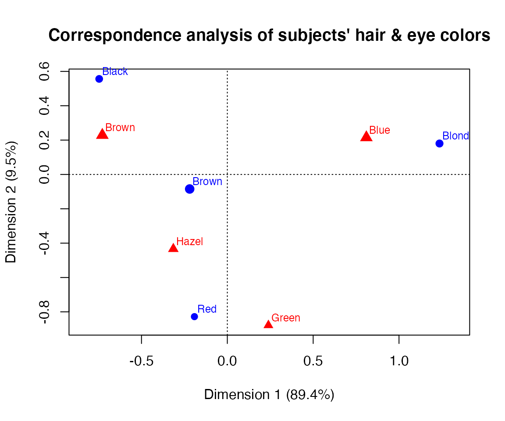
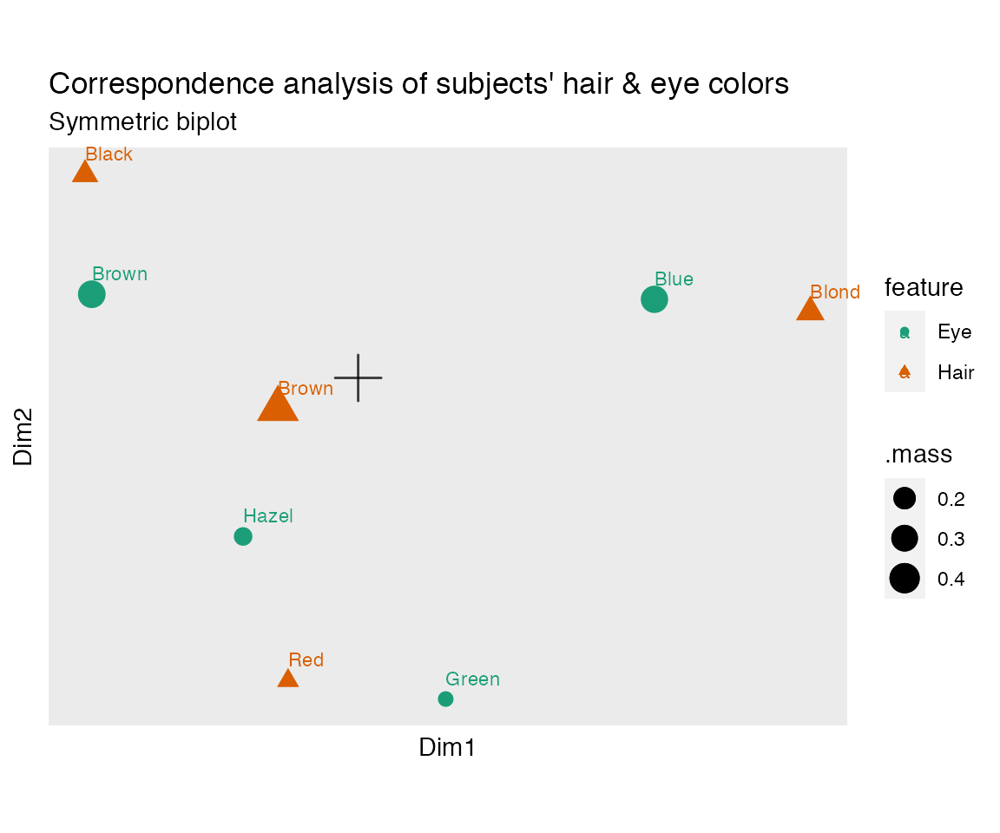

Ordination in the tidyverse
ordr.rmdThis vignette introduces the goals and functionality of the ordr package. Users should have some familiarity with the class of ordination models powered by singular value decomposition, such as principal components analysis, correspondence analysis, and linear discriminant analysis, and with the biplot statistical graphic used to visualize these models. Users should also be familiar with the tidyverse R package collection for data science and parts of the tidymodels collection for statistical modeling, most notably tibble, dplyr, broom, and ggplot2.
Briefly, ordr incorporates ordination models into a “tidy” workflow. Specifically, for fitted ordination models of a variety of classes, users can
- augment the model with row- or column-level diagnostics and annotations,
- summarize the model or its components as tidy data frames, and
- produce a biplot of the model using a layered grammar of graphics.
As an example, this vignette performs a correspondence analysis (CA) of the HairEyeColor data set installed with R, using the fitting engine and already high-quality printing and plotting methods of the ca package, then showcases some more flexible methods in ordr. While some techniques specific to CA are not as natural in ordr, most can be reproduced through the principled use of general steps.
the hair and eye color data
We begin with an inspection of the data using base R. For more information about the data set, call help(HairEyeColor).
print(HairEyeColor)
#> , , Sex = Male
#>
#> Eye
#> Hair Brown Blue Hazel Green
#> Black 32 11 10 3
#> Brown 53 50 25 15
#> Red 10 10 7 7
#> Blond 3 30 5 8
#>
#> , , Sex = Female
#>
#> Eye
#> Hair Brown Blue Hazel Green
#> Black 36 9 5 2
#> Brown 66 34 29 14
#> Red 16 7 7 7
#> Blond 4 64 5 8
plot(HairEyeColor)
The data were collected by students in one of Ronald Snee’s statistics courses.1 They consist of the hair color and eye color, each binned into four groups, of 592 subjects. The data are also stratified by sex, forming a 3-way array. The mosaic plot reveals only subtle differences by sex, so we lose little by flattening the array into a \(4 \times 4\) matrix. The resulting count table is suitable for correspondence analysis, and we fit this model next.
correspondence analysis using ca
haireye <- apply(HairEyeColor, c(1L, 2L), sum)
haireye_ca <- ca(haireye)
print(haireye_ca)
#>
#> Principal inertias (eigenvalues):
#> 1 2 3
#> Value 0.208773 0.022227 0.002598
#> Percentage 89.37% 9.52% 1.11%
#>
#>
#> Rows:
#> Black Brown Red Blond
#> Mass 0.182432 0.483108 0.119932 0.214527
#> ChiDist 0.551192 0.159461 0.354770 0.838397
#> Inertia 0.055425 0.012284 0.015095 0.150793
#> Dim. 1 -1.104277 -0.324463 -0.283473 1.828229
#> Dim. 2 1.440917 -0.219111 -2.144015 0.466706
#>
#>
#> Columns:
#> Brown Blue Hazel Green
#> Mass 0.371622 0.363176 0.157095 0.108108
#> ChiDist 0.500487 0.553684 0.288654 0.385727
#> Inertia 0.093086 0.111337 0.013089 0.016085
#> Dim. 1 -1.077128 1.198061 -0.465286 0.354011
#> Dim. 2 0.592420 0.556419 -1.122783 -2.274122The variation in the table, in terms of the \(\chi^2\) distances between the distributions of hair color among people with the same eye color (or, equivalently, vice-versa), lies largely (\(89\%\)) along a single dimension (Dim. 1), with the remaining variation largely (\(9.5\%\)) along a single orthogonal dimension (Dim. 2). Dimension 1 most clearly distinguishes between subjects with black hair and brown eyes from those with blond hair and blue eyes. Subjects with brown and red hair, or with hazel and green eyes, lie between these extremes. Dimension 2 distinguishes subjects with black or blond hair, and with brown or blue eyes, from those with brown or red hair, and with hazel or green eyes. Subjects with red hair and green eyes are especially distinguished along Dimension 2. This disrupts the impression from Dimension 1 alone that subjects lie along a spectrum from black hair–brown eyes to blond hair–blue eyes, which may accurately include an intermediate phenotype (brown hair–hazel eyes), and reveals a phenotype (red hair–green eyes) that diverges from this spectrum.
As an exercise, we can recover the row and column standard coordinates returned by ca from direct computations, e.g. following the Wikipedia article on correspondence analysis, starting from the data matrix (count table) \(X\) with total count \(n = 1^\top X 1\):
- The correspondence matrix (the matrix of relative frequencies) \(P = \frac{1}{n} X\)
- The row and column weights \(r = \frac{1}{n} X 1\) and \(c = \frac{1}{n} 1^\top X\)
- The diagonals of inverse weights \(D_r = \operatorname{diag}(r)\) and \(D_c = \operatorname{diag}(c)\)
- The matrix of standardized residuals \(S = D_r (P - rc) D_c\)
- The singular value decomposition \(S = U \Sigma V^\top\)
- The row and column standard coordinates \(F = D_r U\) and \(G = D_c V\)
# correspondence matrix (matrix of relative frequencies)
(haireye_p <- haireye / sum(haireye))
#> Eye
#> Hair Brown Blue Hazel Green
#> Black 0.11486486 0.03378378 0.02533784 0.008445946
#> Brown 0.20101351 0.14189189 0.09121622 0.048986486
#> Red 0.04391892 0.02871622 0.02364865 0.023648649
#> Blond 0.01182432 0.15878378 0.01689189 0.027027027
# row and column weights
(haireye_r <- rowSums(haireye) / sum(haireye))
#> Black Brown Red Blond
#> 0.1824324 0.4831081 0.1199324 0.2145270
(haireye_c <- colSums(haireye) / sum(haireye))
#> Brown Blue Hazel Green
#> 0.3716216 0.3631757 0.1570946 0.1081081
# matrix of standardized residuals
(haireye_s <-
diag(1 / sqrt(haireye_r)) %*%
(haireye_p - haireye_r %*% t(haireye_c)) %*%
diag(1 / sqrt(haireye_c)))
#> [,1] [,2] [,3] [,4]
#> [1,] 0.180773066 -0.12615064 -0.01961905 -0.08029590
#> [2,] 0.050694815 -0.08012300 0.05561963 -0.01418351
#> [3,] -0.003081574 -0.07110772 0.03502737 0.09381990
#> [4,] -0.240474512 0.28973637 -0.09156384 0.02518174
# singular value decomposition
haireye_svd <- svd(haireye_s)
# row and column standard coordinates
diag(1 / sqrt(haireye_r)) %*% haireye_svd$u[, 1:3]
#> [,1] [,2] [,3]
#> [1,] -1.1042772 1.4409170 -1.0889497
#> [2,] -0.3244635 -0.2191109 0.9574152
#> [3,] -0.2834725 -2.1440145 -1.6312184
#> [4,] 1.8282287 0.4667063 -0.3180920
diag(1 / sqrt(haireye_c)) %*% haireye_svd$v[, 1:3]
#> [,1] [,2] [,3]
#> [1,] -1.0771283 0.5924202 -0.42395984
#> [2,] 1.1980612 0.5564193 0.09238682
#> [3,] -0.4652862 -1.1227826 1.97191769
#> [4,] 0.3540108 -2.2741218 -1.71844295The summary() method prints a scree plot using plain text asterisks and uses permills (thousands) to express several model diagnostics, in particular the relative contribution of each dimension to the inertia of each phenotype (cor) and the absolute contribution vice-versa (ctr).
summary(haireye_ca)
#>
#> Principal inertias (eigenvalues):
#>
#> dim value % cum% scree plot
#> 1 0.208773 89.4 89.4 **********************
#> 2 0.022227 9.5 98.9 **
#> 3 0.002598 1.1 100.0
#> -------- -----
#> Total: 0.233598 100.0
#>
#>
#> Rows:
#> name mass qlt inr k=1 cor ctr k=2 cor ctr
#> 1 | Blck | 182 990 237 | -505 838 222 | 215 152 379 |
#> 2 | Brwn | 483 906 53 | -148 864 51 | -33 42 23 |
#> 3 | Red | 120 945 65 | -130 133 10 | -320 812 551 |
#> 4 | Blnd | 215 1000 646 | 835 993 717 | 70 7 47 |
#>
#> Columns:
#> name mass qlt inr k=1 cor ctr k=2 cor ctr
#> 1 | Brwn | 372 998 398 | -492 967 431 | 88 31 130 |
#> 2 | Blue | 363 1000 477 | 547 977 521 | 83 22 112 |
#> 3 | Hazl | 157 879 56 | -213 542 34 | -167 336 198 |
#> 4 | Gren | 108 948 69 | 162 176 14 | -339 773 559 |The display quality column qlt refers to the biplot display in 2 dimensions. (If nd is specified in the ca::ca() call, then this is taken to be the dimensionality of the biplot.) The biplot itself is rendered using the plot() method:
plot(
haireye_ca, map = "symbiplot", mass = TRUE,
main = "Correspondence analysis of subjects' hair & eye colors"
)
This symmetric biplot, distinct from the default symmetric map, evenly distributes the inertia between the rows and columns. Distances between points in the same matrix factor do not approximate their \(\chi^2\) distances, but inner products between row and column points do approximate their standardized residuals. The row and column profile markers are resized to represent the masses of the groups.
ordr methods for CA models
ordr provides a new class, ‘tbl_ord’, that wraps ordination objects like those of class ‘prcomp’ without directly modifying them. (The original model can be recovered with un_tbl_ord().)
(haireye_ca_ord <- as_tbl_ord(haireye_ca))
#> # A tbl_ord of class 'ca': (4 x 3) x (4 x 3)'
#> # 3 coordinates: Dim1, Dim2, Dim3
#> #
#> # Rows (standard): [ 4 x 3 | 0 ]
#> Dim1 Dim2 Dim3 |
#> |
#> 1 -1.10 1.44 -1.09 |
#> 2 -0.324 -0.219 0.957 |
#> 3 -0.283 -2.14 -1.63 |
#> 4 1.83 0.467 -0.318 |
#> #
#> # Columns (standard): [ 4 x 3 | 0 ]
#> Dim1 Dim2 Dim3 |
#> |
#> 1 -1.08 0.592 -0.424 |
#> 2 1.20 0.556 0.0924 |
#> 3 -0.465 -1.12 1.97 |
#> 4 0.354 -2.27 -1.72 |The print() method for ‘tbl_ord’ is based on that of tibbles. It prints two tibbles, like that for the ‘tbl_graph’ class of tidygraph, one for each matrix factor. (In PCA, the case scores and the variable loadings of the original data matrix.)
The header reminds us of the dimensions of the matrix factors and how the inertia is distributed. In ‘ca’ objects, by default both row and column profiles are in standard coordinates: \(D_r F\) and \(D_c G\), but these can be reassigned to any pair of proportions \(D_r S {D_c}^\top = (D_r U \Sigma^{p}) (D_c V \Sigma^{q})^\top\), even if \(p + q \neq 1\). By assigning "symmetric" inertia, we distribute half of the inertia to each matrix factor:
get_conference(haireye_ca_ord)
#> [1] 0 0
confer_inertia(haireye_ca_ord, c(.25, .75))
#> # A tbl_ord of class 'ca': (4 x 3) x (4 x 3)'
#> # 3 coordinates: Dim1, Dim2, Dim3
#> #
#> # Rows (25% inertia): [ 4 x 3 | 0 ]
#> Dim1 Dim2 Dim3 |
#> |
#> 1 -0.908 0.895 -0.517 |
#> 2 -0.267 -0.136 0.455 |
#> 3 -0.233 -1.33 -0.775 |
#> 4 1.50 0.290 -0.151 |
#> #
#> # Columns (75% inertia): [ 4 x 3 | 0 ]
#> Dim1 Dim2 Dim3 |
#> |
#> 1 -0.599 0.142 -0.0455 |
#> 2 0.666 0.133 0.00991 |
#> 3 -0.259 -0.269 0.212 |
#> 4 0.197 -0.546 -0.184 |
confer_inertia(haireye_ca_ord, c(1, 1))
#> Warning in confer_inertia(haireye_ca_ord, c(1, 1)): Inertia is not balanced.
#> # A tbl_ord of class 'ca': (4 x 3) x (4 x 3)'
#> # 3 coordinates: Dim1, Dim2, Dim3
#> #
#> # Rows (principal): [ 4 x 3 | 0 ]
#> Dim1 Dim2 Dim3 |
#> |
#> 1 -0.505 0.215 -0.0555 |
#> 2 -0.148 -0.0327 0.0488 |
#> 3 -0.130 -0.320 -0.0832 |
#> 4 0.835 0.0696 -0.0162 |
#> #
#> # Columns (principal): [ 4 x 3 | 0 ]
#> Dim1 Dim2 Dim3 |
#> |
#> 1 -0.492 0.0883 -0.0216 |
#> 2 0.547 0.0830 0.00471 |
#> 3 -0.213 -0.167 0.101 |
#> 4 0.162 -0.339 -0.0876 |
(haireye_ca_ord <- confer_inertia(haireye_ca_ord, "symmetric"))
#> # A tbl_ord of class 'ca': (4 x 3) x (4 x 3)'
#> # 3 coordinates: Dim1, Dim2, Dim3
#> #
#> # Rows (symmetric): [ 4 x 3 | 0 ]
#> Dim1 Dim2 Dim3 |
#> |
#> 1 -0.746 0.556 -0.246 |
#> 2 -0.219 -0.0846 0.216 |
#> 3 -0.192 -0.828 -0.368 |
#> 4 1.24 0.180 -0.0718 |
#> #
#> # Columns (symmetric): [ 4 x 3 | 0 ]
#> Dim1 Dim2 Dim3 |
#> |
#> 1 -0.728 0.229 -0.0957 |
#> 2 0.810 0.215 0.0209 |
#> 3 -0.315 -0.434 0.445 |
#> 4 0.239 -0.878 -0.388 |broom::glance() returns a single-row tibble summary of a model object. It was designed for analysis pipelines involving multiple models (e.g. model selection), to facilitate summaries of multiple models at once. ‘tbl_ord’ objects wrap a potentially huge variety of models, for which only a few summary statistics will usually be useful. This method includes the proportion of inertia/variance in the first two dimensions, which characterize the fidelity of a biplot to the complete data, and the original object class.
glance(haireye_ca_ord)
#> # A tibble: 1 × 7
#> rank n.row n.col inertia prop.var.1 prop.var.2 class
#> <int> <int> <int> <dbl> <dbl> <dbl> <chr>
#> 1 3 4 4 0.234 0.894 0.0951 caAnalogous to broom::augment(), this tbl_ord-specific function preserves the ‘tbl_ord’ class but augments the row and column tibbles with any metadata or diagnostics found in the model object. Vertical bars separate the coordinate matrices from annotations.
augment_ord(haireye_ca_ord)
#> # A tbl_ord of class 'ca': (4 x 3) x (4 x 3)'
#> # 3 coordinates: Dim1, Dim2, Dim3
#> #
#> # Rows (symmetric): [ 4 x 3 | 4 ]
#> Dim1 Dim2 Dim3 | .name .mass .dist .inertia
#> | <chr> <dbl> <dbl> <dbl>
#> 1 -0.746 0.556 -0.246 | 1 Black 0.182 0.551 0.0554
#> 2 -0.219 -0.0846 0.216 | 2 Brown 0.483 0.159 0.0123
#> 3 -0.192 -0.828 -0.368 | 3 Red 0.120 0.355 0.0151
#> 4 1.24 0.180 -0.0718 | 4 Blond 0.215 0.838 0.151
#> #
#> # Columns (symmetric): [ 4 x 3 | 4 ]
#> Dim1 Dim2 Dim3 | .name .mass .dist .inertia
#> | <chr> <dbl> <dbl> <dbl>
#> 1 -0.728 0.229 -0.0957 | 1 Brown 0.372 0.500 0.0931
#> 2 0.810 0.215 0.0209 | 2 Blue 0.363 0.554 0.111
#> 3 -0.315 -0.434 0.445 | 3 Hazel 0.157 0.289 0.0131
#> 4 0.239 -0.878 -0.388 | 4 Green 0.108 0.386 0.0161Additional row- and column-level variables can also be augmented and manipulated using a handful of dplyr-like verbs, each specific to the matrix factor being affected (rows or cols). Each tibble is split between the shared coordinates on the left and any additional annotation columns on the right.
The broom::tidy() method for tbl_ords returns a tibble with one row per artificial coordinate.2 In CA, these are variably called dimensions or components. The ‘ca’ object contains a $sv vector of singular values, which is included in the result; other coordinate-level attributes vary by model object class.
tidy(haireye_ca_ord)
#> # A tibble: 3 × 4
#> .name .sv .inertia .prop_var
#> <fct> <dbl> <dbl> <dbl>
#> 1 Dim1 0.457 0.209 0.894
#> 2 Dim2 0.149 0.0222 0.0951
#> 3 Dim3 0.0510 0.00260 0.0111The .inertia and .prop_var fields are calculated from the singular values or eigenvalues contained in the ordination object and always appear when defined. This means that tidy() prepares any ordination object derived from such a decomposition for a scree plot with ggplot2::ggplot():
ggplot(tidy(haireye_ca_ord), aes(x = .name, y = .inertia)) +
geom_col() +
labs(x = "Component", y = "Inertia") +
ggtitle("Correspondence analysis of subjects' hair & eye colors",
"Decomposition of inertia")
While ggplot2::fortify() may rarely be called directly, is plays a special role in ordr by converting a ‘tbl_ord’ object to a ‘tbl_df’ object. To do this, the fortifier row-binds the two matrix factor tibbles and adds an additional .matrix column to remember which was which:
fortify(haireye_ca_ord)
#> # A tibble: 8 × 4
#> Dim1 Dim2 Dim3 .matrix
#> <dbl> <dbl> <dbl> <chr>
#> 1 -0.746 0.556 -0.246 rows
#> 2 -0.219 -0.0846 0.216 rows
#> 3 -0.192 -0.828 -0.368 rows
#> 4 1.24 0.180 -0.0718 rows
#> 5 -0.728 0.229 -0.0957 cols
#> 6 0.810 0.215 0.0209 cols
#> 7 -0.315 -0.434 0.445 cols
#> 8 0.239 -0.878 -0.388 colsThis fortifier will also preserve any row and column annotations, so it can be composed with augment_ord() or with the row- and column-specific verbs. NAs are introduced when an annotation is present for one matrix factor but not the other.
The .matrix column also plays a key role in ggbiplot(): The row- and column-specific ploy layers, which take the form geom_rows_*() or stat_cols_*(), for example, use this column to subset the data internally. This enables the layered grammar of graphics of ggplot2 to apply separately to the two matrix factors and their annotation. Though note that it can also be applied to the entire fortified data frame using conventional plot layers, as below when the .matrix column is used to distinguish the colors and shapes of the row and column profile markers:
haireye_ca_ord %>%
augment_ord() %>%
fortify() %>%
transform(feature = ifelse(.matrix == "rows", "Hair", "Eye")) %>%
ggbiplot(aes(color = feature, shape = feature, label = .name), clip = "off") +
theme_biplot() +
geom_origin() +
geom_rows_point(aes(size = .mass)) +
geom_cols_point(aes(size = .mass)) +
geom_rows_text(vjust = -1, hjust = 0, size = 3) +
geom_cols_text(vjust = -1, hjust = 0, size = 3) +
scale_color_brewer(type = "qual", palette = "Dark2") +
scale_size_area() +
ggtitle("Correspondence analysis of subjects' hair & eye colors",
"Symmetric biplot")
Note a few conveniences:
- The position aesthetics are assumed to be the first and second artifical coordinates, unless otherwise specified. Biplots can also be specified by setting the
xandyaesthetics to integers, which are converted to the corresponding artificial coordinates. - By default, the aspect ratio is set to 1. This is essential for biplots, which rely on distances between markers and angles between vectors to convey information.
- The partial theme
theme_biplot()removes several plot elements that are usually not important to biplots, most notably gridlines, while retaining other properties of the current theme. - The layer
geom_origin()is one of two shortcuts for plotting elements commonly used in biplots, the other beinggeom_unit_circle().
session info
sessioninfo::session_info()
#> ─ Session info ───────────────────────────────────────────────────────────────
#> setting value
#> version R version 4.1.1 (2021-08-10)
#> os macOS Mojave 10.14.6
#> system x86_64, darwin17.0
#> ui X11
#> language (EN)
#> collate en_US.UTF-8
#> ctype en_US.UTF-8
#> tz America/New_York
#> date 2021-09-11
#>
#> ─ Packages ───────────────────────────────────────────────────────────────────
#> package * version date lib source
#> assertthat 0.2.1 2019-03-21 [2] CRAN (R 4.1.0)
#> ca * 0.71.1 2020-01-24 [2] CRAN (R 4.1.0)
#> cachem 1.0.5 2021-05-15 [2] CRAN (R 4.1.0)
#> cli 3.0.1 2021-07-17 [2] CRAN (R 4.1.0)
#> colorspace 2.0-2 2021-06-24 [2] CRAN (R 4.1.0)
#> crayon 1.4.1 2021-02-08 [2] CRAN (R 4.1.0)
#> DBI 1.1.1 2021-01-15 [2] CRAN (R 4.1.0)
#> desc 1.3.0 2021-03-05 [2] CRAN (R 4.1.0)
#> digest 0.6.27 2020-10-24 [2] CRAN (R 4.1.0)
#> dplyr 1.0.7 2021-06-18 [2] CRAN (R 4.1.0)
#> ellipsis 0.3.2 2021-04-29 [2] CRAN (R 4.1.0)
#> evaluate 0.14 2019-05-28 [2] CRAN (R 4.1.0)
#> fansi 0.5.0 2021-05-25 [2] CRAN (R 4.1.0)
#> farver 2.1.0 2021-02-28 [2] CRAN (R 4.1.0)
#> fastmap 1.1.0 2021-01-25 [2] CRAN (R 4.1.0)
#> fs 1.5.0 2020-07-31 [2] CRAN (R 4.1.0)
#> generics 0.1.0 2020-10-31 [2] CRAN (R 4.1.0)
#> ggplot2 * 3.3.5 2021-06-25 [2] CRAN (R 4.1.0)
#> ggrepel 0.9.1 2021-01-15 [2] CRAN (R 4.1.0)
#> glue 1.4.2 2020-08-27 [2] CRAN (R 4.1.0)
#> gtable 0.3.0 2019-03-25 [2] CRAN (R 4.1.0)
#> highr 0.9 2021-04-16 [2] CRAN (R 4.1.0)
#> htmltools 0.5.2 2021-08-25 [2] CRAN (R 4.1.0)
#> knitr 1.34 2021-09-09 [2] CRAN (R 4.1.0)
#> labeling 0.4.2 2020-10-20 [2] CRAN (R 4.1.0)
#> lifecycle 1.0.0 2021-02-15 [2] CRAN (R 4.1.0)
#> logisticPCA 0.2 2016-03-14 [2] CRAN (R 4.1.0)
#> magrittr 2.0.1 2020-11-17 [2] CRAN (R 4.1.0)
#> memoise 2.0.0 2021-01-26 [2] CRAN (R 4.1.0)
#> munsell 0.5.0 2018-06-12 [2] CRAN (R 4.1.0)
#> ordr * 0.0.0.9000 2021-09-11 [1] local
#> pillar 1.6.2 2021-07-29 [2] CRAN (R 4.1.0)
#> pkgconfig 2.0.3 2019-09-22 [2] CRAN (R 4.1.0)
#> pkgdown 1.6.1 2020-09-12 [2] CRAN (R 4.1.0)
#> purrr 0.3.4 2020-04-17 [2] CRAN (R 4.1.0)
#> R6 2.5.1 2021-08-19 [2] CRAN (R 4.1.1)
#> ragg 1.1.3 2021-06-09 [2] CRAN (R 4.1.0)
#> RColorBrewer 1.1-2 2014-12-07 [2] CRAN (R 4.1.0)
#> Rcpp 1.0.7 2021-07-07 [2] CRAN (R 4.1.0)
#> rlang 0.4.11 2021-04-30 [2] CRAN (R 4.1.0)
#> rmarkdown 2.10 2021-08-06 [2] CRAN (R 4.1.0)
#> rprojroot 2.0.2 2020-11-15 [2] CRAN (R 4.1.0)
#> scales 1.1.1 2020-05-11 [2] CRAN (R 4.1.0)
#> sessioninfo 1.1.1 2018-11-05 [2] CRAN (R 4.1.0)
#> stringi 1.7.4 2021-08-25 [2] CRAN (R 4.1.0)
#> stringr 1.4.0 2019-02-10 [2] CRAN (R 4.1.0)
#> systemfonts 1.0.2 2021-05-11 [2] CRAN (R 4.1.0)
#> textshaping 0.3.5 2021-06-09 [2] CRAN (R 4.1.0)
#> tibble 3.1.4 2021-08-25 [2] CRAN (R 4.1.0)
#> tidyselect 1.1.1 2021-04-30 [2] CRAN (R 4.1.0)
#> utf8 1.2.2 2021-07-24 [2] CRAN (R 4.1.0)
#> vctrs 0.3.8 2021-04-29 [2] CRAN (R 4.1.0)
#> withr 2.4.2 2021-04-18 [2] CRAN (R 4.1.0)
#> xfun 0.25 2021-08-06 [2] CRAN (R 4.1.0)
#> yaml 2.2.1 2020-02-01 [2] CRAN (R 4.1.0)
#>
#> [1] /private/var/folders/pg/fjg8r4fj5v33zqmwptf9mfg80000gn/T/RtmpgA9tyg/temp_libpath5d2b244ad75
#> [2] /Library/Frameworks/R.framework/Versions/4.1/Resources/libraryNote that
ordr::tidy()takes precedence for ‘tbl_ord’ objects because the ‘tbl_ord’ class precedes the underlying model class.↩︎